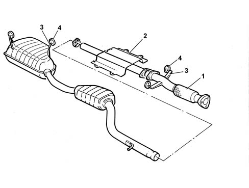

Composition
- Path
- Descriptions > 10 ENGINE > 1076 EXHAUST PIPES AND SILENCERS > Composition
- Kind
- system description
- Applies to
- engines: 2.0 TB; all production periods
- Interactive page
- https://sloeber94.github.io/elrnDB-lThss/en/#/622384
Applies to: engines: 2.0 TB; all production periods
STRUCTURE
The engine exhaust gases flow through the catalyzer upstream of the exhaust pipe.
The catalyzer is connected to the rear section of the exhaust via a flexible section (1).
Special protection (2) limits the emission of heat to the bodyshell.
The various components are supported by means of mountings (3) and circlips (4) fastened to the bodyshell.
